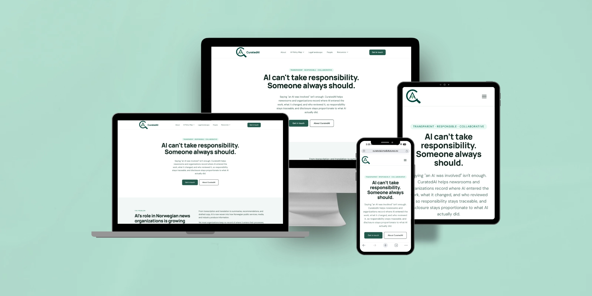

Making AI use in journalism visible, accountable and proportionate.

AI is transforming journalistic practices, from news production and editorial decision-making to how information is curated and distributed. This creates opportunities and challenges for journalists, newsrooms and the public. Newsrooms must decide which AI tools to use, what to disclose, and who is responsible, while readers rarely know where AI was involved.
CuratedAI, a research project at SFI MediaFutures, investigates this change and helps newsrooms examine where they use AI and what different audiences need to know. The project website had to make this research understandable beyond the research team, to journalists, editors, newsroom managers and readers. The design challenge was to turn a complex framework into clear information that is easy to find and easy to act on.
I joined the CuratedAI team as a research assistant in September 2026. Together with colleagues, I worked on the UX/UI design of the project website using Figma and Figma Make.
My research work includes reviewing AI policies from Norwegian newsrooms and expanding that review to international news organizations. The goal is to understand how newsrooms describe, disclose, and govern their use of AI. I also help prepare research activities and project events.
CuratedAI explores technical and ethical questions, but the project website needs to speak to people beyond the research team. In the design work, the focus was on making the project purpose, activities, and information easier to find and understand.
That meant considering content structure and visual hierarchy alongside the interface itself — a good reminder that UX/UI is as much about communicating clearly as it is about arranging screens.
Collaborative website design work in Figma and Figma Make, alongside an ongoing comparative review of newsroom AI policies. CuratedAI is still in progress, so this case study documents my contributions rather than claiming final research findings or measured outcomes.